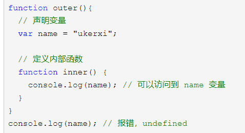
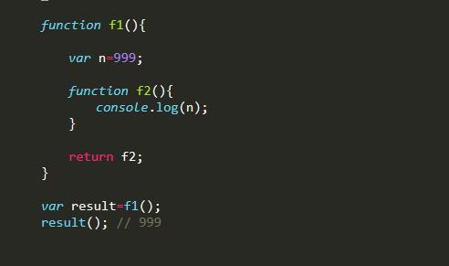

# 一、前言
2019 年的时候我开始自学前端，这篇博客也是当时学习的时候留下的笔记，直至今日我重新复习的时候把它翻出来，再加以修改总结写成一篇学习笔记，供自己以后复习所用。
# 二、内容
# 1、作用域 & 作用域链
# 作用域是什么？
按我自己对 JavaScript 的理解，作用域应该是一个变量有效的范围。一个变量名并不是在哪里都是被使用的，它是有一个能够被使用的范围的，这个范围就叫做变量的作用域。
# JavaScript 中的作用域？
在 es5 时代，用 var 关键字定义的变量没有块级作用域，只有函数作用域和全局作用域。
for(var i= 0; i<10; i++){ | |
// do something | |
} | |
console.log(i); // --10 |
在 es6 及之后的时代，用 let、const 关键字定义的变量具有块级作用域。
for(let i = 0;i < 10; i++){ | |
//do something | |
} | |
console.log(i);//报错，undefined |
# 那什么是作用域链？
因为在程序编写的时候我们经常会嵌套作用域，像内部作用域能访问外部作用域的变量，但外部作用域不能访问内部作用域。在 JavaScript 中，变量访问的原则是：根据作用域的前端往上进行搜索，直到搜索到最外层的作用域（通常是全局作用域），搜索到就停止搜索。
var name = "global"; | |
function super(){ | |
var name = "super"; | |
function sub(){ | |
var name = "sub"; | |
} | |
} |
总而言之，作用域是一个变量有效的范围，一个变量访问的规则是根据作用域链来进行从内到外的搜索
# 2、闭包
# 闭包的概念？
了解了 JavaScript 的变量有效范围和访问机制后，我们可以利用它来做什么呢？
上面也讲过，在 es5 时代，JavaScript 是没有块级作用域的，这带来了很多不便，有些变量其实只要在一小块地方用到，要是在全局下暴露出来，可能会不小心误修改，而且会污染全局作用域以及各种各样的问题，这样显然是不妥的。
那么为了弄出局部变量，或者说私有变量，聪明的前辈们利用在作用域链下下文章。我们刚刚也提到过，外部作用域是无法访问内部作用域的变量的，于是它们利用函数作用域，将要使用的局部变量封装在一个函数内部，这样这个函数作用域外部就无法访问内部的变量了。
可是只是这样子，我们也没法用到这些内部的变量。但是内部作用域可以访问外部作用域，于是我们在这个函数内部再弄一些函数出来，而这些函数可以访问和操作这些局部变量。那么我们只要在外部函数返回这些内部函数，然后在外函数的外边就能够使用这些内部函数进行访问和操作这些私有变量了。

总而言之，闭包的用途就是用来封装私有变量，或者说模仿块级作用域。
但是闭包也有缺点，大量使用且使用不当可能会导致内存泄漏
# 3、立即执行函数
# 立即执行函数是什么？
立即执行函数实际上也是利用作用域链模拟块级作用域的一种用法。与闭包类似，但不同点在于立即执行函数在创建后立即执行。
# 立即执行函数的写法？
(function(){ | |
... | |
})(); |
它和闭包共同的优点在于减少全局变量的使用。
# 经典面试题
我们来看这样的一段代码：
var list = document.getElementByTagName('li'); | |
for(var i = 0; i<6;i++){ | |
list[i].onClick = function(){ | |
alert(i); | |
} | |
} |
这段代码乍一眼看下去，可能会以为点击不同下标对应的标签会输出对应下标的数字，但实际上并非如此，无论点击哪一个，都只会输出 6
因为定义的 i 是全局作用域的，在事件监听函数中其实它们都是引用的同一个变量 i—— 全局下的变量 i，所以都会输出 6
但是用立即执行函数就可以解决这一个问题。
var list = document.getElementByTagName('li'); | |
for(var i = 0; i<6;i++){ | |
(function(j){ | |
list[j].onClick = function(){ | |
alert(j);//0,1,2,3,4,5 | |
} | |
})(i); | |
} |
在 JavaScript 中函数传递调用参数都是值传递，所以当立即执行函数执行时，首先会把参数 i 的值复制一份，然后再创建函数作用域来执行函数，循环 5 次就会创建 5 个作用域，所以每个 li 元素访问的都是不同作用域的 i 的值 。
当然，其实在初始代码中将 var 关键字改成 let 来定义 i 变量也可以解决这一个问题。
# 三、总结
总而言之，作用域和作用域链、闭包是 JavaScript 的精粹之一，也是非常重要的基础，面试几乎必问，一定要好好掌握。